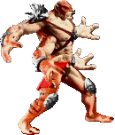
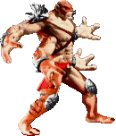

Sub Zero

Kuai Liang (奎良 or 快涼), commonly known as Sub-Zero (絶対零度, "Absolute zero")[1], and formerly known as Tundra and the cyborg LK-52O, is a Lin Kuei assassin in the Mortal Kombat fighting game series. He is the younger brother of Bi-Han, who was the original Sub-Zero in the first Mortal Kombat game. The younger Sub-Zero made his debut in Mortal Kombat II.
Scorpion

Hanzo Hasashi, also known as Scorpion (全蠍人, "Full Scorpion Man")[3], is a resurrected ninja in the Mortal Kombat fighting game series as well as being the series' mascot. He is one of the very few original characters debuting in the first Mortal Kombat arcade game. He holds the distinction, along with Raiden and Sub-Zero (in one form or another), of appearing in every generation of Mortal Kombat games as a playable character.
Mileena

Mileena is a clone of Kitana, created by Shang Tsung's sorcery in his flesh pits for Shao Kahn, using Tarkatan physiology. Vicious and evil, she despises Kitana, and feels that it is her own right to rule Edenia as Princess in her place. Her fondest wish is to kill her "sister", and claim her existence for her own. Somewhat of an opportunist, she will make use of any chance to seize power that comes within her hands.
Liu Kang

Liu Kang (刘康)[1] is a character in the Mortal Kombat fighting game series. He is one of the few original characters, debuting in the first Mortal Kombat arcade game. He serves as the protagonist of the first four games, the live-action films and the original comic book series. He became the Grand Champion of Mortal Kombat throughout the first four tournaments, a title that remained undisputed in the original timeline.
Kitana

Princess Kitana is 10,000 years old, but is considered young in her realm of Edenia and has the appearance of a young woman. Throughout the years, she rose to great importance; first as the loyal stepdaughter of Shao Kahn, then as his enemy, tearing herself away from his grasp and freeing her home realm of Edenia. She also led an army into Outworld to combat any chance of Shao Kahn rising to power again.
Raiden

Raiden (雷電) is one of the few original characters in the first Mortal Kombat game, and in addition, is the one of the few characters to have appeared in every generation of Mortal Kombat games as a playable character.


 
